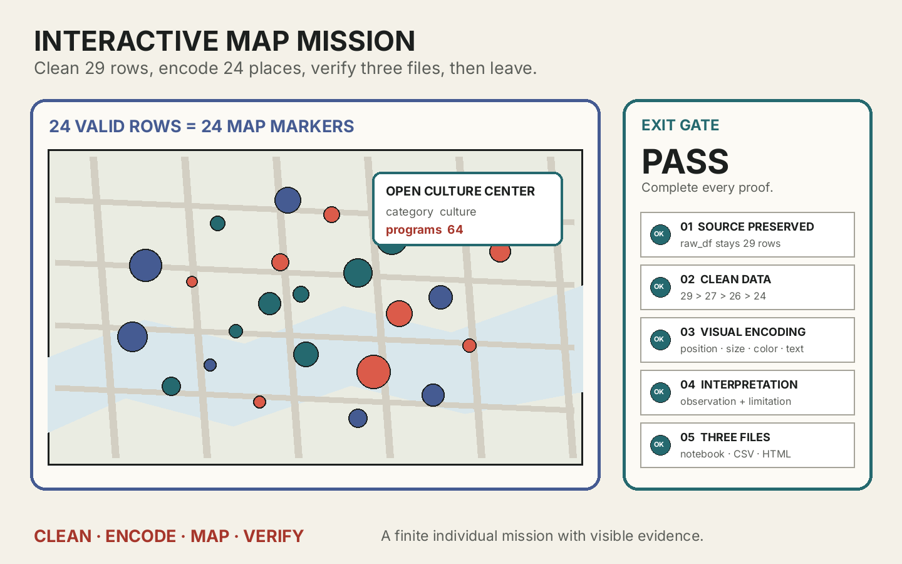

정제된 행과 지도 마커의 일대일 대응을 세 결과물로 증명하기
오늘의 실습 목표
raw_df와 원본 CSV를 보존한 채clean_df에서만 데이터를 정리할 수 있습니다.- 숫자 변환, 결측 처리, 중복 처리, 좌표 범위 검사를 적용해 29행을 유효한 24행으로 만들 수 있습니다.
- 프로그램 수를 읽을 수 있는 원의 반지름 범위로 변환할 수 있습니다.
- 밝은 바탕지도에서 읽기 쉬운 검증된 팔레트를 고르고, 같은 범주에는 같은 색을 적용할 수 있습니다.
- 정제된 모든 행을 툴팁과 팝업이 있는
CircleMarker로 표시할 수 있습니다. - 지도에서 확인한 패턴과 데이터만으로 단정할 수 없는 한계를 구분해 기록할 수 있습니다.
- 새 런타임 전체 실행에서 자동 검사 PASS를 받고 세 제출 파일을 완성할 수 있습니다.
자동 검사 PASS + 세 파일 제출 = 즉시 귀가
0-6분의 공통 안내가 끝나면 각자 자신의 속도로 진행합니다. 마지막 셀의 완료 문구를 확인하고 실행 결과가 남은 노트북, 정제 CSV, 지도 HTML 세 파일을 제출한 학생은 수업 종료 시각을 기다리지 않고 즉시 귀가합니다.
속도를 채점하지 않습니다. 작업 속도와 남은 수업 시간은 평가에 반영하지 않습니다. 빠르게 제출하는 것보다 원본 보존, 정제 근거, 시각 인코딩과 해석의 한계를 정확히 증명하는 것이 중요합니다.
- 01준비사본 저장과 파일명
- 02기준 실행다섯 편집 조건 확인
- 03질문 설계제목·질문·크기·색
- 04정제 확인29→27→26→24행
- 05지도 생성마커 24개
- 06해석 기록관찰과 한계
- 07파일 저장CSV + HTML
- 08검증새 런타임 전체 실행
- 09귀가세 파일 제출 확인
EXIT GATE
완료 문구 + 실행 결과가 있는 노트북 + 열리는 CSV·HTML
세 파일의 이름과 내용, 마지막 PASS 문구를 교수가 확인하면 필수 실습이 끝납니다. 세 가지 검증된 팔레트 가운데 하나를 고르고, 선택한 색상 규칙을 모든 행에 일관되게 적용합니다.
이번 주에 완성할 세 결과물

원본 크기로 보기 ↗| 결과물 | 증명하는 것 | 제출 파일명 |
|---|---|---|
| 실행 가능한 Colab 노트북 | 원본 확인, 정제, 인코딩, 지도 생성, 관찰·한계 기록과 자동 검사 PASS | week10_학번_이름.ipynb |
| 정제 데이터 CSV | 결측·중복·범위 오류가 없고 세 범주를 포함한 유효한 24행 | week10_학번_이름_cleaned.csv |
| 인터랙티브 지도 HTML | 마커 24개, 서로 다른 크기·색상, 툴팁·팝업, 지도 질문·관찰·한계 | week10_학번_이름_map.html |
귀가 조건: 제출 전에 열두 가지 확인
자가 점검완료 0/12
자동 검사는 미적 취향을 채점하지 않는다
자동 검사는 실행 순서, 학번·이름, 원본 보존, 정제 수량, 반지름 범위, 승인된 팔레트, 마커 수, 툴팁·팝업 내용, 관찰·한계의 작성 여부와 저장 파일을 확인합니다. 어떤 팔레트가 더 아름다운지, 어느 제목이 더 세련되어 보이는지는 판정하지 않습니다.
50분 진행 기준
| 시간 | 단계 | 완료 표시 |
|---|---|---|
| 0-6분 | 공통 안내, 노트북 열기, Drive 사본 저장, 파일명 변경 | 자신의 노트북 사본이 열림 |
| 6-11분 | 수정 전 전체 실행과 다섯 편집 조건 확인 | 원본 29행·정제 24행·마커 24개 출력 |
| 11-18분 | 학번·이름, 지도 제목·질문, 반지름과 팔레트 수정 | STEP 1에 자신의 규칙이 출력됨 |
| 18-28분 | 정제 과정과 제외 이유, 최종 행·범주·좌표 확인 | 29→27→26→24행과 범주별 8개 출력 |
| 28-38분 | 지도 생성, 마커 확대·이동, 툴팁·팝업과 범례 점검 | 서로 다른 크기·색상의 마커 24개 |
| 38-43분 | 패턴 관찰과 해석 한계를 각각 30자 이상 작성 | 지도 왼쪽 설명 패널에 두 문장이 보임 |
| 43-47분 | 새 런타임에서 모두 실행하고 자동 검사 PASS 확인 | 완료 문구와 열두 개의 초록 확인 |
| 47-50분 | 노트북·CSV·HTML 다운로드와 제출 상태 확인 | 세 파일 제출 확인 후 즉시 귀가 |
시간표는 기다려야 하는 시각이 아니라 현재 위치를 확인하는 안내입니다. 30분에 모든 조건을 달성했다면 바로 새 런타임 검사를 실행하고 세 파일을 제출할 수 있습니다. 시간이 더 필요한 학생은 최대 50분까지 같은 목표를 자신의 속도로 수행합니다.
STEP 0 · 노트북 사본과 파일명 준비
- 위의 Colab에서 미션 노트북 열기를 누르거나 내려받은
.ipynb를 Colab에 업로드합니다. - 파일 → Drive에 사본 저장을 선택합니다.
- 상단 파일명을 눌러
week10_학번_이름.ipynb로 바꿉니다. - 노트북에는 코드 셀이 일곱 개 있습니다.
EDIT가 적힌 STEP 1과 STEP 5만 수정합니다. - 처음에는 값을 바꾸지 않고 런타임 → 모두 실행을 선택합니다.
노트북이 Colab에서 직접 열리지 않을 때
Starter notebook 카드를 눌러 파일을 내려받습니다. Google Colab ↗ 첫 화면의 업로드 탭에서 내려받은 week-10-interactive-map-mission.ipynb를 선택합니다.
왜 Drive에 사본을 저장하는가?
공개된 원본 템플릿은 모두가 함께 보는 출발점입니다. Drive 사본을 만들면 자신의 입력과 실행 결과가 개인 파일에 저장되고, 제출할 노트북의 소유권과 파일명이 분명해집니다.
STEP 1 · 수정 전 기준 실행
수정 전에도 데이터 정제와 지도 생성 코드는 끝까지 실행됩니다. 마지막 검사에서는 학생이 직접 바꿔야 할 다섯 조건만 빨간 표시로 나옵니다. 이것은 코드 고장이 아니라 시작 상태가 완료 조건을 아직 충족하지 않았다는 뜻입니다.
기준 출력원본 크기: (29, 6)
기준 출력행 수 변화: 29 → 27 → 26 → 24
기준 출력정제 행 수: 24 / 생성 마커 수: 24
수정 대상제출 정보 · 제목과 질문 · 반지름 · 팔레트 · 관찰과 한계
첫 전체 실행에서 마지막 셀이 빨갛게 멈추면 실패한 것인가?
아닙니다. 시작값은 학번·이름, 기본 제목·질문, 같은 반지름, 같은 회색, 안내 문장을 사용하므로 다섯 편집 조건이 의도적으로 통과하지 않습니다. 원본 29행, 정제 24행과 지도 마커 24개가 출력되었다면 환경은 정상입니다.
Folium 설치가 오래 걸리거나 import 오류가 날 때
STEP 0은 Folium이 없을 때만 설치합니다. 설치가 끝나기 전에 다음 셀을 실행하지 말고 완료 표시를 기다립니다. 오류가 계속되면 런타임 → 세션 다시 시작 후 STEP 0부터 다시 실행합니다.
STEP 2 · 제출 정보와 지도 질문 작성
STEP 1에서 학번과 이름, 지도 제목과 질문을 수정합니다. 제목은 지도가 무엇을 다루는지 알 수 있게 작성하고, 질문은 현재 열인 위치·시설 범주·프로그램 수로 답할 수 있어야 합니다.
student_id = "20261234"
student_name = "김지도"
map_title = "서울 가상 문화시설 프로그램 분포"
map_question = "프로그램 수가 많은 시설은 어느 위치와 범주에서 확인되는가?"“이 지도는 재미있는가?”는 데이터 열로 답하기 어렵습니다. “프로그램 수가 많은 시설은 어디에 있는가?”, “세 범주의 큰 원은 어떤 위치에 나타나는가?”처럼 지도에서 확인할 위치·수치·범주를 질문에 포함합니다.
STEP 1 출력에 자신의 학번·이름, 8자 이상의 지도 제목, 물음표가 있는 20자 이상의 질문이 보입니다.
학번과 이름 검사가 계속 실패할 때
"학번"과 "이름"을 실제 값으로 바꾸고 따옴표는 유지합니다. 슬래시와 역슬래시는 파일 경로로 해석될 수 있으므로 사용하지 않습니다. 수정한 뒤 STEP 1을 다시 실행합니다.
지도 질문 검사에서 멈출 때
기본 질문과 다른 문장을 20자 이상 작성하고 문장 끝에 ? 또는 ？를 넣습니다. 질문이 place_name, category, program_count, 위치 가운데 하나 이상과 연결되는지도 확인합니다.
STEP 3 · 반지름과 범주 팔레트 정하기
같은 STEP 1에서 최솟값과 최댓값의 반지름을 정하고 palette_name에 해안, 숲길, 도시 가운데 하나를 입력합니다. 반지름은 화면 픽셀 단위이며 프로그램 수가 가장 작은 시설과 가장 큰 시설의 원 크기를 결정합니다.
minimum_radius = 6
maximum_radius = 20
palette_name = "해안"| 설정 | 통과 범위 | 화면에서 달라지는 것 |
|---|---|---|
minimum_radius | 4 이상 | 프로그램 수가 가장 작은 시설의 원 크기 |
maximum_radius | 28 이하, 최솟값보다 6 이상 큼 | 프로그램 수가 가장 큰 시설의 원 크기 |
palette_name | 해안, 숲길, 도시 중 하나 | 도서관·박물관·문화센터의 구분 |
세 팔레트는 밝은 바탕지도와의 대비를 확인한 색상 묶음입니다. 임의의 색상 코드를 직접 입력하지 않아도 서로 다른 범주가 구분되며, 툴팁·팝업과 범례의 문자 정보가 색상만으로 의미를 판단하지 않도록 보완합니다.
최소 반지름보다 최대 반지름이 충분히 크고, 범례에서 세 범주가 서로 다른 색으로 구분됩니다.
반지름 범위 검사에서 멈출 때
minimum_radius는 4 이상, maximum_radius는 28 이하로 둡니다. 두 값의 차이는 6 이상이어야 하며 최솟값이 최댓값보다 작아야 합니다. 예를 들어 6과 20은 통과하지만 12와 12는 모든 원을 같은 크기로 만들어 통과하지 않습니다.
팔레트 선택 검사에서 멈출 때
palette_name의 따옴표 안에 해안, 숲길, 도시 가운데 하나를 정확히 입력합니다. 팔레트 이름과 범주 이름은 띄어쓰기나 철자를 바꾸지 않습니다.
STEP 4 · 정제 과정과 24행 확인
STEP 2와 STEP 3은 수정하지 않습니다. raw_df를 깊은 복사로 보존하고 clean_df에서만 아래 순서로 처리합니다.
| 단계 | 행 수 | 근거 |
|---|---|---|
| 원본 | 29 | 유효한 시설 24개와 문제 행 5개 |
| 숫자 변환과 결측 처리 | 27 | 빈 위도와 숫자가 아닌 프로그램 수 제외 |
| 식별자 중복 처리 | 26 | 반복된 C004 한 행 제외 |
| 좌표 범위 처리 | 24 | 위도 95와 경도 226.99 제외 |
최종 출력에는 도서관 8개, 박물관 8개, 문화센터 8개가 남습니다. 값을 눈대중으로 고치지 않고 현재 원본으로 확인할 수 없는 다섯 행을 제외한 결과입니다.
raw_df는 29행, clean_df는 24행이며 위도·경도 결측, 범위 오류와 place_id 중복이 없습니다.
정제 후 24행이 나오지 않을 때
정제 셀을 직접 수정했다면 편집 → 실행 취소로 원래 코드로 돌아가거나 새 사본을 엽니다. 이 미션에서는 STEP 1과 STEP 5만 수정합니다. 세션을 다시 시작하고 STEP 0부터 순서대로 실행해 원본이 29행인지 먼저 확인합니다.
STEP 5 · 지도 마커 24개와 문자 정보 확인
STEP 4가 정제된 모든 행을 반복하면서 지도 마커를 만듭니다. 마커가 보이면 다음 순서로 직접 조작합니다.
- 지도를 한 단계 확대하고 서로 다른 위치의 마커를 비교합니다.
- 작은 원과 큰 원을 찾아 팝업의 프로그램 수가 실제로 다른지 확인합니다.
- 같은 색의 마커를 두 개 골라 툴팁의 시설 범주가 같은지 확인합니다.
- 세 색상이 범례의 도서관·박물관·문화센터와 일치하는지 확인합니다.
- 설명 패널을 열고 시설 24개 텍스트 표를 키보드로 펼쳐 같은 장소·범주·프로그램 수를 읽을 수 있는지 확인합니다.
- 출력된 정제 행 수와 생성 마커 수가 모두 24인지 확인합니다.
마커 24개가 서로 다른 좌표에 놓이고, 프로그램 수에 따라 크기가 달라지며, 툴팁과 팝업에서 장소명·범주·실제 값을 읽을 수 있습니다.
모든 마커의 크기가 같을 때
STEP 1의 minimum_radius와 maximum_radius가 같은지 확인합니다. 두 값을 다르게 수정하고 STEP 1부터 STEP 4까지 다시 실행합니다. 가장 작은 프로그램 수와 가장 큰 프로그램 수가 각각 최소·최대 반지름으로 연결됩니다.
지도 배경이 회색이거나 보이지 않을 때
바탕지도 타일은 인터넷을 통해 불러옵니다. 네트워크 연결을 확인하고 출력 영역을 잠시 기다립니다. 정제 행 수와 마커 수가 24로 출력되었다면 데이터 코드는 실행된 상태이므로, 새로고침하기 전에 네트워크와 브라우저의 외부 콘텐츠 차단 여부를 확인합니다.
마커가 한 개처럼 겹쳐 보일 때
화면을 확대해 가까운 좌표를 분리해서 봅니다. 출력의 생성 마커 수가 24인지 확인하고 여러 위치에 마우스를 올려 툴팁을 읽습니다. 마커 생성 셀의 좌표나 반복문을 직접 수정하지 않습니다.
STEP 6 · 지도 관찰과 해석의 한계 작성
STEP 5의 두 문장을 자신의 내용으로 바꿉니다. 관찰은 지도에서 실제로 확인한 위치·크기·색상의 패턴을 설명합니다. 한계는 현재 데이터에 없는 정보와 가상 자료라는 범위를 근거로 단정할 수 없는 내용을 설명합니다.
pattern_observation = (
"큰 원은 특정 한곳에만 모이지 않고 세 시설 범주와 여러 위치에 걸쳐 흩어져 나타난다."
)
limitation_statement = (
"가상 자료에는 이용자 수와 지역 인구가 없으므로 시설의 접근성이나 서비스 수준을 판단할 수 없다."
)“큰 원이 많다”만 쓰면 어느 위치와 범주를 보았는지 알기 어렵습니다. “동쪽에 큰 원이 두 개 보이지만 세 범주 전체에 크기 차이가 있다”처럼 화면에서 확인할 수 있는 근거를 포함합니다. 한계 문장에서는 “마커가 없는 지역에는 시설이 없다”처럼 데이터 범위를 넘어서는 단정을 피합니다.
관찰과 한계가 각각 30자 이상이며, 안내 문장이 아니라 자신이 확인한 지도와 데이터 범위를 설명합니다.
30자 이상인데 관찰 검사가 실패할 때
처음 들어 있던 “작성하세요” 안내 문장을 일부만 고치지 말고 전체를 자신의 문장으로 바꿉니다. 따옴표와 괄호는 유지하고, 지도에서 확인한 위치·크기·색상 중 두 가지 이상을 구체적으로 적습니다.
관찰과 해석의 차이를 모르겠을 때
관찰은 “동쪽에 큰 원 두 개가 보인다”처럼 화면에서 직접 확인한 내용입니다. 해석은 “동쪽 문화 서비스가 더 우수하다”처럼 이유와 의미를 판단한 문장입니다. 이용자 수·인구·접근성 정보가 없으므로 이번 한계 문장에서는 그 판단이 불가능한 이유를 적습니다.
STEP 7 · 정제 CSV와 지도 HTML 저장 확인
STEP 5를 실행하면 학번과 이름을 사용해 두 결과 파일이 자동으로 저장됩니다. 출력과 Colab 왼쪽 파일 목록에서 이름을 확인합니다.
정제 데이터week10_학번_이름_cleaned.csv · 24 rows
인터랙티브 지도week10_학번_이름_map.html · 24 circle markers
- 정제 CSV를 내려받아 열고 헤더를 제외한 24행이 있는지 확인합니다.
- 지도 HTML을 내려받아 브라우저로 엽니다.
- 지도 확대·이동, 툴팁과 팝업이 작동하는지 확인합니다.
- 왼쪽 설명 패널에 자신의 제목·질문·관찰·한계가 보이는지 확인합니다.
- 설명 패널의 시설 24개 텍스트 표가 키보드로 열리고 모든 장소 정보를 제공하는지 확인합니다.
- 오른쪽 범례의 세 색상과 실제 마커 색상이 일치하는지 확인합니다.
HTML을 눌렀는데 코드 문자만 보일 때
Colab의 파일 미리보기는 HTML을 웹페이지로 실행하지 않고 문자로 보여 줄 수 있습니다. 왼쪽 파일 목록에서 지도 파일의 메뉴를 열어 다운로드한 뒤 컴퓨터의 Chrome, Safari 또는 Firefox로 엽니다. 파일 확장자가 .html인지 확인합니다.
HTML은 열리지만 바탕지도만 늦게 보일 때
지도 HTML의 마커와 설정은 파일에 들어 있지만 바탕지도 타일은 인터넷에서 불러옵니다. 인터넷이 연결된 브라우저에서 다시 열고 잠시 기다립니다. 화면 아래의 지도 출처 표기를 삭제하지 않습니다.
STEP 8 · 새 런타임 전체 실행과 자동 검사 PASS
- STEP 1과 STEP 5의 수정 내용을 확인합니다.
- 런타임 → 세션 다시 시작을 선택합니다.
- 런타임 → 모두 실행을 한 번 선택합니다.
- 설치부터 저장까지 일곱 코드 셀이 순서대로 끝날 때까지 기다립니다.
- 마지막 FINAL CHECK에서 열두 개의 초록 확인과 완료 문구를 찾습니다.
✅ 새 런타임에서 STEP 0부터 일곱 셀 순서대로 실행
✅ 학번·이름과 안전한 파일명
✅ 자신의 지도 제목과 질문
✅ 출처·이용 조건·기준일·관찰 단위·개인정보 기록
✅ raw_df 29행과 원본 파일 보존
✅ 29→27→26→24행 정제와 세 범주
✅ 수치가 커질수록 커지는 반지름
✅ 검증된 팔레트와 세 범주 색상
✅ 정제 24행과 마커 24개
✅ 30자 이상의 지도 관찰과 해석 한계
✅ 정제 CSV와 지도 HTML 파일
✅ 저장 파일과 현재 상태 일치
🎉 WEEK 10 INTERACTIVE MAP COMPLETE
FINAL CHECK 코드는 수정하지 않는다
검사 셀에는 파일 내용, 실행 순서와 지도 마커를 확인하는 아직 배우지 않은 코드가 포함되어 있습니다. 직접 작성하거나 고칠 필요가 없습니다. 빨간 표시의 한글 조건을 읽고 STEP 1 또는 STEP 5의 값만 수정합니다.
새 런타임 실행 순서 검사만 실패할 때
중간 셀을 따로 여러 번 실행하면 코드 셀 번호가 1부터 7까지 이어지지 않습니다. 수정 내용을 저장한 뒤 세션을 다시 시작하고 모두 실행을 한 번만 선택합니다. 실행 중에는 개별 셀의 재생 버튼을 누르지 않습니다.
저장 파일과 현재 상태 일치 검사에서 멈출 때
팔레트·반지름·관찰 문장을 마지막으로 바꾼 뒤 지도 생성과 저장 셀을 다시 실행하지 않았을 수 있습니다. 새 세션에서 모두 실행하면 현재 설정으로 지도와 CSV가 다시 저장됩니다. 그 뒤 FINAL CHECK를 확인합니다.
STEP 9 · 세 파일 제출 후 즉시 귀가
- 마지막 셀에 WEEK 10 INTERACTIVE MAP COMPLETE가 보이는지 확인합니다.
- 파일 → 다운로드 → .ipynb 다운로드로 실행 결과가 포함된 노트북을 받습니다.
- Colab 왼쪽 파일 목록에서 정제 CSV와 지도 HTML을 각각 다운로드합니다.
- 세 파일의 학번과 이름이 모두 같은지 확인합니다.
- 제출함에 세 파일을 모두 올리고 업로드 완료 상태를 교수에게 보여 줍니다.
- 제출 확인을 받으면 남은 시간과 관계없이 즉시 귀가합니다.
완료 판정
자동 검사 PASS, 실행 결과가 있는 노트북, 유효한 24행 CSV, 브라우저에서 작동하는 마커 24개의 지도 HTML이 확인되면 오늘의 필수 학습 목표를 달성했습니다. 작업 속도와 남은 수업 시간은 평가에 반영하지 않습니다.
세 파일 가운데 하나가 보이지 않을 때
정제 CSV와 지도 HTML은 STEP 5 실행 후 생성됩니다. 새 런타임 전체 실행이 끝났다면 Colab 왼쪽 파일 목록의 새로고침을 누릅니다. 노트북은 Colab 상단 메뉴의 다운로드에서 받고, CSV와 HTML은 왼쪽 파일 목록에서 각각 받습니다.
선택 확장 · 완료 후 더 살펴보고 싶은 경우만
아래 활동은 귀가 조건이 아니며 추가 점수도 없습니다. 먼저 통과한 세 파일을 제출하고 보존한 뒤, 원할 때만 노트북 사본에서 시도합니다.
- 최소·최대 반지름 간격을 넓히거나 좁혀 크기 차이가 과장되거나 사라지는 지점을 비교합니다.
- 다른 승인 팔레트를 선택하고 범례와 마커의 구분, 지도의 전체 인상이 어떻게 달라지는지 비교합니다.
- 범주별 시설 수와 프로그램 수 합계를 pandas로 계산해 지도에서 본 패턴과 비교합니다.
- 동일한 정제 CSV를 11주차 막대그래프나 산점도의 입력으로 사용하기 위해 별도 사본으로 보관합니다.
11주차 연결
이번 지도는 위도·경도를 위치로 사용해 “어디에 있는가?”를 보여 줍니다. 11주차에는 같은 정제 CSV를 Matplotlib과 Seaborn으로 표현하여 범주별 개수와 프로그램 수의 관계를 더 직접적으로 비교하고, 질문에 따라 적절한 시각화 형식이 달라지는 이유를 살펴봅니다.
도움말과 공식 자료
- Google Colab 공식 입문 노트북코드 셀 실행, Drive 사본 저장과 런타임 사용법
- Folium 공식 문서: Getting started지도 생성, 마커·툴팁·팝업과 HTML 저장
- Folium 공식 문서: Circle과 CircleMarker미터 단위 Circle과 화면 픽셀 단위 CircleMarker의 차이
- pandas 공식 문서: to_numeric숫자 변환과
errors="coerce"의 동작 - pandas 공식 문서: drop_duplicates식별 열을 기준으로 중복 행을 처리하는 방법